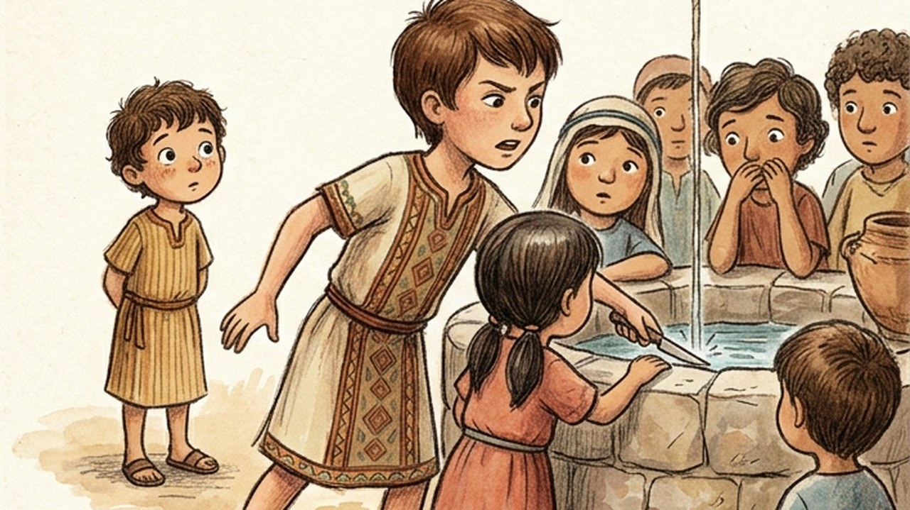
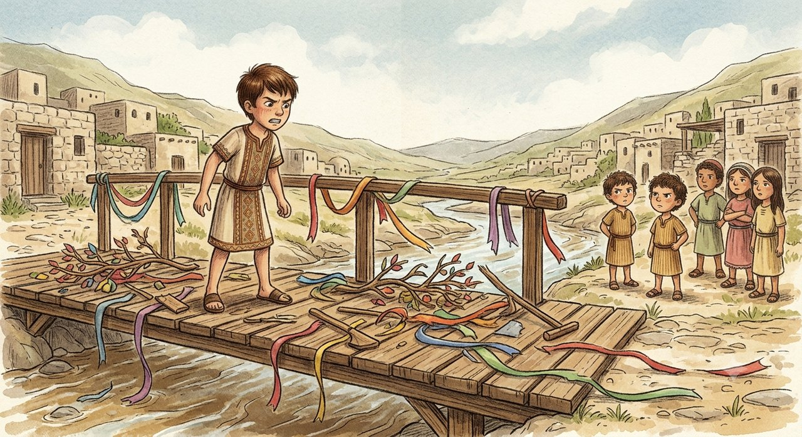
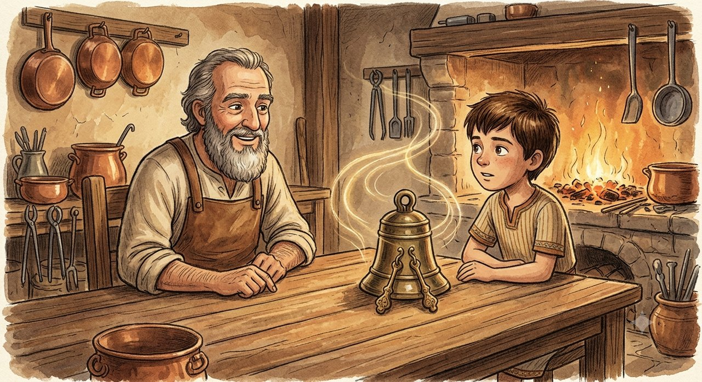
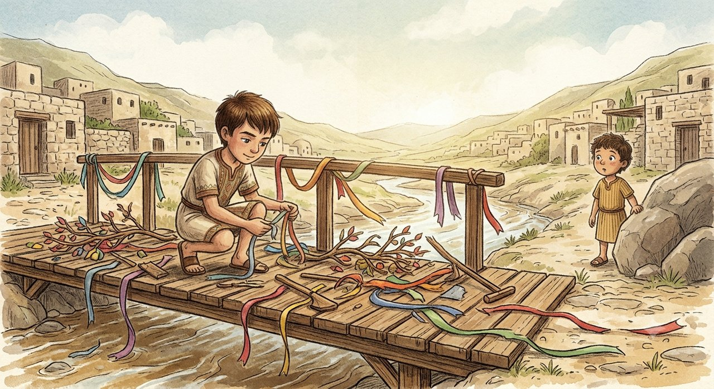
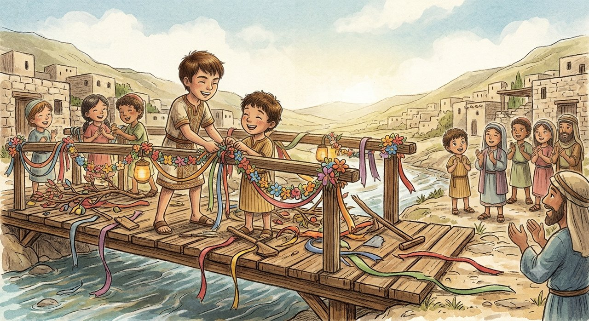

In the village of the Springs, set among high cliffs, there lived a spirited boy and natural leader named Matan. Matan had an easy authority, a confident voice and a presence that drew the village children after him — first among them his younger cousin Daniel, who looked at him with blind admiration and copied every movement, word and expression. Matan was proud of standing as the older and responsible one, but he treated his influence as a privilege of power rather than as a responsibility. He would lecture others about order and good manners, while allowing himself to act with impatience and contempt, secure in the belief that "the rules are for everyone else".
The warped mechanism: a double standard, and forgetting how far influence carries
Matan built himself an exemption and turned it on the very people who learned from him, refusing to see that his actions taught many times louder than his words:
Matan cuts the queue at the water in a hurry — and explains it to himself: "My errand is urgent, that is not the same as disrespecting the rules." Then Daniel sees, and shoves a smaller child out of the line; and Matan scolds him: "Where are your manners?!"
Matan quietly mocks the old shepherd and imitates his walk — and explains it to himself: "I was only joking with my friends, it does not really hurt anyone." Then Daniel throws small stones at the flock while the children laugh; and Matan turns on him: "Why are you tormenting animals?!"
Matan refuses to clear away the tools at the end of the day and leaves them scattered — and explains it to himself: "I worked harder than any of them, I have earned a rest." Then Daniel kicks the toolbox over and refuses to help at home; and Matan complains to his parents that Daniel "has become insolent and knows no limits".
The crisis and the collapse of the fortress

Before the dedication of the village's new wooden bridge, Matan was put in charge of the boys who were to decorate its railing with festival ribbons. When he grew tired, Matan sat down in a corner, threw the leftover cords into the river and muttered aloud: "It makes no difference how we tie them, nobody looks at our work anyway."
The next morning Matan found that Daniel and the younger children had wrecked the decorations, torn the ribbons and thrown the tools into the river — on exactly the same argument: "Matan said it makes no difference." The bridge stood abandoned and disgraced a few hours before the ceremony.
Matan raged and hurled bitter insults at Daniel for destroying the village's work. Daniel looked back at him hard, without a trace of remorse, and answered: "I did exactly what you did. If you are allowed not to care, why am I not?"
The words struck home. All the children drew away from him, taking on the contempt and the anger he himself had planted in them. Matan was left standing alone on the ruined bridge, understanding that every crooked thing he had seen in others was only an enlarged shadow of what he had done himself.
The meeting with the wise man, and the bell

Matan climbed to the old watchtower at the top of the cliff, where Aminadav, the eldest of the coppersmiths, sat. Aminadav did not judge him. He took an ancient bronze bell with two clappers out of a wooden cabinet and set it down on the table.
"Strike this bell, Matan," said Aminadav.
Matan tapped the rim of the bell with a small stick. The bell gave out a harsh, grating note, and at once the sound came back off the walls at double the strength, setting every vessel in the room shuddering with the same unpleasant tremor.
"This is the bell of the double echo," Aminadav explained. "The first clapper is what you do, and the second is the eyes of whoever is learning from you. When you sound a note of contempt, of anger, or of a double standard, the echo that comes back from the people around you does not come back as words — it comes back as actions, at twice the strength. Children do not listen to our lectures on right and wrong; they follow the footprints we leave in the sand. A personal example is not one way of influencing someone. It is the only way."
Aminadav took Matan's hand and helped him strike the bell with a gentle, exact movement. This time the bell gave out a clear, warm and harmonious note, and the echo that filled the room was calm and pleasant.
Understanding, and repair

Matan understood the size of the responsibility resting on his shoulders as a leader and as someone others copy. He went back down to the bridge, took a broom and fresh cords, and began working quietly and steadily, without shouting and without demanding that anyone do it in his place.
When Daniel saw Matan sweeping patiently, mending the torn cords and picking the tools up off the ground with care, he came closer, hesitating. Matan looked at him, smiled gently and said: "I was wrong, Daniel. I showed you a crooked way, and you deserved better than that to copy. If you like, we will learn together how to build something everyone can be proud of."

Daniel took the other end of the ribbon, and together — on an example of patience and quiet work — the rest of the village children joined them and finished decorating the bridge in beauty and in one accord.
Words teach, but actions raise a child. Whoever wants to see respect, patience and honesty around him must first be the source those things flow from.